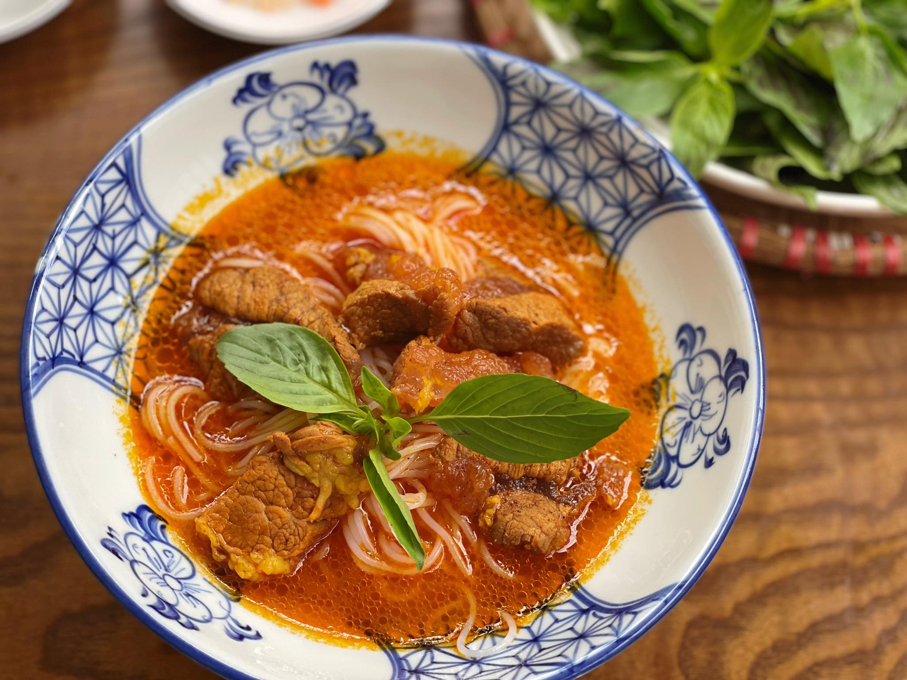
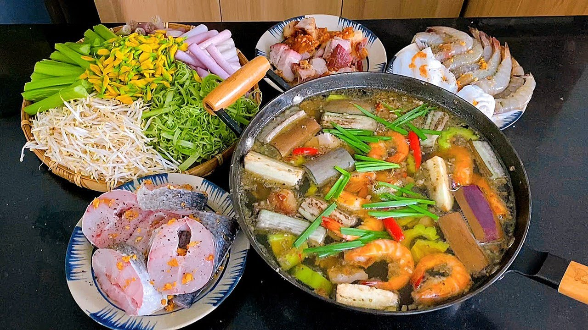
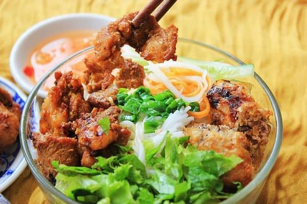
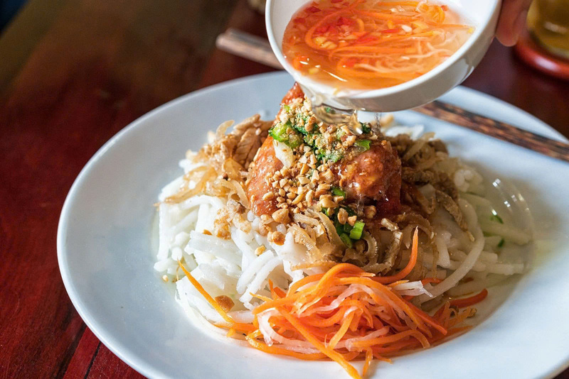

Ẩm thực Bạc Liêu
Đậm đà hương vị miền Tây Nam Bộ
Ẩm thực Bạc Liêu mang đậm hương vị miền Tây Nam Bộ, nổi bật với sự độc đáo trong cách chế biến và nguyên liệu đa dạng, thơm ngon, đậm đà. Các món ăn nơi đây vừa bình dị, gần gũi với đời sống người dân, vừa thể hiện rõ nét bản sắc văn hóa của vùng đất phương Nam.

Bún bò cay Bạc Liêu là một món ăn đặc trưng, góp phần làm nên bản sắc ẩm thực riêng của tỉnh Bạc Liêu nói riêng và vùng Nam Bộ nói chung. Món ăn phản ánh sự giao thoa văn hóa trong đời sống ẩm thực địa phương, đặc biệt chịu ảnh hưởng từ cộng đồng người Khmer, tạo nên hương vị khác biệt so với các món bún bò ở những vùng miền khác. Điểm nổi bật của bún bò cay Bạc Liêu nằm ở phần nước dùng có màu đỏ cam đặc trưng, được nấu từ xương bò kết hợp với ớt, sả và các loại gia vị truyền thống. Vị cay nồng rõ nét nhưng hài hòa, không lấn át mà làm nổi bật vị ngọt tự nhiên của thịt bò. Sợi bún nhỏ, mềm, ăn kèm với thịt bò, chả và rau sống, tạo nên sự cân bằng về hương vị và giá trị dinh dưỡng.

Bánh xèo Bạc Liêu là một trong những món ăn dân gian tiêu biểu, phản ánh rõ nét đời sống sinh hoạt và bản sắc ẩm thực của cư dân vùng Đồng bằng sông Cửu Long. Món ăn được hình thành từ sự gắn bó lâu đời giữa con người với môi trường sông nước, nơi nguồn nguyên liệu nông sản và thủy sản phong phú đã tạo điều kiện cho sự đa dạng trong cách chế biến và thưởng thức. Về thành phần, bánh xèo Bạc Liêu được làm từ bột gạo xay mịn, pha cùng nước cốt dừa và nghệ, tạo nên lớp vỏ bánh vàng giòn, béo nhẹ và có hương thơm đặc trưng. Phần nhân bánh thường gồm tôm, thịt, giá đỗ và các nguyên liệu địa phương, phản ánh sự dung hòa giữa sản vật tự nhiên và thói quen ẩm thực của người dân miền Tây Nam Bộ. Bánh xèo được ăn kèm với nhiều loại rau sống và chấm nước mắm pha chua ngọt, góp phần cân bằng hương vị và tăng giá trị cảm quan cho món ăn. Không chỉ là món ăn thường nhật, bánh xèo Bạc Liêu còn mang ý nghĩa văn hóa – xã hội sâu sắc, thường xuất hiện trong các buổi họp mặt gia đình, lễ hội và sinh hoạt cộng đồng. Qua thời gian, món bánh xèo đã trở thành biểu tượng ẩm thực đặc trưng, góp phần quảng bá hình ảnh văn hóa địa phương và thể hiện tinh thần hiếu khách, chân chất của con người Bạc Liêu.

Lẩu mắm là một món ăn truyền thống tiêu biểu của vùng Đồng bằng sông Cửu Long, trong đó Bạc Liêu là một trong những địa phương gìn giữ và phát huy rõ nét giá trị ẩm thực của món ăn này. Lẩu mắm được hình thành từ tập quán sinh hoạt gắn liền với môi trường sông nước, nơi nguồn thủy sản và rau xanh phong phú đã tạo điều kiện cho sự đa dạng trong chế biến và thưởng thức. Thành phần cốt lõi của lẩu mắm là nước dùng nấu từ mắm cá (thường là mắm cá sặc hoặc mắm cá linh), kết hợp với các loại gia vị truyền thống, tạo nên hương vị đậm đà, đặc trưng. Đi kèm với nồi lẩu là các nguyên liệu phong phú như cá, tôm, thịt, cùng nhiều loại rau đặc trưng của Nam Bộ như bông súng, rau nhút, cà tím và các loại rau đồng khác. Sự kết hợp hài hòa giữa các nguyên liệu không chỉ tạo nên giá trị dinh dưỡng mà còn làm nổi bật bản sắc ẩm thực vùng miền. Không đơn thuần là một món ăn, lẩu mắm còn mang ý nghĩa văn hóa sâu sắc, thường xuất hiện trong các bữa ăn gia đình, dịp sum họp hay tiếp đãi khách quý. Qua thời gian, lẩu mắm đã trở thành biểu tượng ẩm thực đặc trưng của miền Tây Nam Bộ, góp phần thể hiện lối sống cộng đồng, sự hào sảng và tinh thần hiếu khách của con người Bạc Liêu nói riêng và vùng sông nước Nam Bộ nói chung.

Bún xào nem nướng là một món ăn dân dã nhưng giàu giá trị ẩm thực, phổ biến tại nhiều tỉnh Nam Bộ, trong đó có Bạc Liêu. Món ăn thể hiện sự linh hoạt trong cách chế biến và thưởng thức của người dân địa phương, dựa trên nguồn nguyên liệu quen thuộc, dễ tìm nhưng được kết hợp hài hòa để tạo nên hương vị đặc trưng. Thành phần chính của bún xào nem nướng gồm bún tươi, nem nướng làm từ thịt heo xay nhuyễn ướp gia vị, cùng các loại rau sống và đồ chua ăn kèm. Bún được xào nhẹ với gia vị tạo độ thấm và thơm, kết hợp với nem nướng vàng đều, mang lại sự cân bằng giữa vị béo, mặn, ngọt và hương thơm đặc trưng. Nước chấm đi kèm, thường pha từ mắm, đậu phộng và các gia vị truyền thống, góp phần làm nổi bật hương vị tổng thể của món ăn. Không chỉ đơn thuần là một món ăn thường nhật, bún xào nem nướng còn phản ánh nét sinh hoạt ẩm thực gần gũi, giản dị của người dân Bạc Liêu. Qua thời gian, món ăn đã trở thành một phần trong đời sống ẩm thực địa phương, góp phần làm phong phú thêm bản sắc văn hóa ẩm thực Nam Bộ.

Bánh tằm ngan dừa là một món ăn truyền thống, mang đậm dấu ấn ẩm thực dân gian của tỉnh Bạc Liêu và vùng Nam Bộ. Món ăn gắn liền với đời sống sinh hoạt thường ngày của người dân địa phương, phản ánh sự khéo léo trong việc tận dụng nguồn nguyên liệu sẵn có từ nông nghiệp và thủy sản, đặc biệt là cây dừa – loài cây đặc trưng của vùng đất ven biển. Thành phần chính của bánh tằm ngan dừa gồm sợi bánh tằm làm từ bột gạo, có hình dạng to, mềm và dai nhẹ, kết hợp với phần “ngan” (xá pấu hoặc bì, tùy cách gọi địa phương) cùng nước cốt dừa nấu sánh, béo và thơm. Món ăn thường được rắc thêm mè rang, hành phi hoặc đậu phộng giã nhỏ, tạo nên sự hài hòa giữa vị béo của dừa, vị mặn nhẹ của phần ăn kèm và vị ngọt tự nhiên của bột gạo. Không chỉ là món ăn dân dã, bánh tằm ngan dừa còn mang giá trị văn hóa ẩm thực sâu sắc, thường xuất hiện trong các bữa ăn gia đình, chợ quê và các dịp sinh hoạt cộng đồng. Qua thời gian, món ăn đã trở thành một nét đặc trưng trong văn hóa ẩm thực Bạc Liêu, góp phần gìn giữ và lan tỏa bản sắc ẩm thực truyền thống của địa phương.